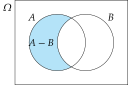

5 Probabilidad
La estadística descriptiva permite describir el comportamiento y las relaciones entre las variables en la muestra, pero no permite sacar conclusiones sobre el resto de la población.
Ha llegado el momento de dar el salto de la muestra a la población y pasar de la estadística descriptiva a la inferencia estadística, y el puente que lo permite es la Teoría de la Probabilidad.
Hay que tener en cuenta que el conocimiento que se puede obtener de la población a partir de la muestra es limitado, y que para obtener conclusiones válidas para la población la muestra debe ser representativa de esta. Por esta razón, para garantizar la representatividad de la muestra, esta debe extraerse aleatoriamente, es decir, al azar.
La teoría de la probabilidad precisamente se encarga de controlar ese azar para saber hasta qué punto son fiables las conclusiones obtenidas a partir de una muestra.
5.1 Experimentos y sucesos aleatorios
El estudio de una característica en una población se realiza a través de experimentos aleatorios.
Definición 5.1 (Experimento aleatorio) Un experimento aleatorio es un experimento que cumple dos condiciones:
- El conjunto de posibles resultados es conocido.
- No se puede predecir con absoluta certeza el resultado del experimento.
Ejemplo 5.1 Un ejemplo típico de experimentos aleatorios son los juegos de azar. El lanzamiento de un dado, por ejemplo, es un experimento aleatorio ya que:
- Se conoce el conjunto posibles de resultados \(\{1,2,3,4,5,6\}\).
- Antes de lanzar el dado, es imposible predecir con absoluta certeza el valor que saldrá.
Otro ejemplo de experimento aleatorio sería la selección de un individuo de una población al azar y la determinación de su grupo sanguíneo.
En general, la obtención de cualquier muestra mediante procedimientos aleatorios será un experimento aleatorio.
Definición 5.2 (Espacio muestral) Al conjunto \(\Omega\) de todos los posibles resultados de un experimento aleatorio se le llama espacio muestral.
Ejemplo 5.2 Algunos ejemplos de espacios muestrales son:
- Lanzamiento de una moneda: \(\Omega=\{c,x\}\).
- Lanzamiento de un dado: \(\Omega=\{1,2,3,4,5,6\}\).
- Grupo sanguíneo de un individuo seleccionado al azar: \(\Omega=\{\mbox{A},\mbox{B},\mbox{AB},\mbox{0}\}\).
- Estatura de un individuo seleccionado al azar: \(\Omega=\mathbb{R}^+\).
En experimentos donde se mide más de una variable, la determinación del espacio muestral puede resultar compleja. En tales casos es recomendable utilizar un para construir el espacio muestral.
En un diagrama de árbol cada variable se representa en un nivel del árbol y cada posible valor de la variable como una rama.
Ejemplo 5.3 El siguiente diagrama de árbol representa el espacio muestral de un experimento aleatorio en el que se mide el sexo y el grupo sanguíneo de un individuo al azar.
Definición 5.3 (Suceso aleatorio) Un suceso aleatorio es cualquier subconjunto del espacio muestral \(\Omega\) de un experimento aleatorio.
Existen distintos tipos de sucesos:
- Suceso imposible: Es el suceso vacío \(\emptyset\). Este suceso nunca ocurre.
- Sucesos elementales: Son los sucesos formados por un solo elemento.
- Sucesos compuestos: Son los sucesos formados por dos o más elementos.
- Suceso seguro: Es el suceso que contiene el propio espacio muestral \(\Omega\). Este suceso siempre ocurre.
Ejemplo 5.4 En el experimento aleatorio del lanzamiento de un dado, con espacio muestral \(\Omega=\{1, 2, 3, 4, 5, 6\}\), el subconjunto \(\{2, 4, 6\}\) es un suceso aleatorio que se cumple cuando sale un número par, y el subconjunto \(\{1, 2, 3, 4\}\) es un suceso aleatorio que se cumple cuando sale un número menor que 5.
5.1.1 Espacio de sucesos
Definición 5.4 (Espacio de sucesos) Dado un espacio muestral \(\Omega\) de un experimento aleatorio, el conjunto formado por todos los posibles sucesos de \(\Omega\) se llama espacio de sucesos de \(\Omega\) y se denota \(\mathcal{P}(\Omega)\).
Ejemplo 5.5 Dado el espacio muestral \(\Omega=\{a,b,c\}\), su espacio de sucesos es
\[\mathcal{P}(\Omega)=\left\{\emptyset, \{a\},\{b\},\{c\},\{a,b\},\{a,c\},\{b,c\},\{a,b,c\}\right\}\]
Puesto que los sucesos son conjuntos, por medio de la teoría de conjuntos se pueden definir las siguientes operaciones entre sucesos:
- Unión.
- Intersección.
- Complementario.
- Diferencia.
5.1.2 Unión de suscesos
Definición 5.5 (Suceso unión) Dados dos sucesos \(A,B\subseteq \Omega\), se llama suceso unión de \(A\) y \(B\), y se denota \(A\cup B\), al suceso formado por los elementos de \(A\) junto a los elementos de \(B\), es decir,
\[A\cup B = \{x\,|\, x\in A\mbox{ o }x\in B\}.\]

El suceso unión \(A\cup B\) ocurre siempre que ocurre \(A\) o \(B\).
Ejemplo 5.6 Dado el espacio muestral correspondiente al lanzamiento de un dado \(\Omega=\{1,2,3,4,5,6\}\) y los sucesos \(A=\{2,4,6\}\) y \(B=\{1,2,3,4\}\), la unión de \(A\) y \(B\) es \(A\cup B=\{1,2,3,4,6\}\).
5.1.3 Intersección de sucesos
Definición 5.6 (Suceso intersección) Dados dos sucesos \(A,B\subseteq \Omega\), se llama suceso intersección de \(A\) y \(B\), y se denota \(A\cap B\), al suceso formado por los elementos comunes de \(A\) y \(B\), es decir,
\[A\cap B = \{x\,|\, x\in A\mbox{ y }x\in B\}.\]

El suceso intersección \(A\cap B\) ocurre siempre que ocurren \(A\) y \(B\).
Diremos que dos sucesos son incompatibles si su intersección es vacía.
Ejemplo 5.7 Dado el espacio muestral correspondiente al lanzamiento de un dado \(\Omega=\{1,2,3,4,5,6\}\) y los sucesos \(A=\{2,4,6\}\) y \(B=\{1,2,3,4\}\), la intersección de \(A\) y \(B\) es \(A\cap B=\{2,4\}\), y por tanto, se trata de sucesos compatibles. Sin embargo, el suceso \(C=\{1, 3\}\) es incompatible con \(A\) ya que \(A\cap C=\emptyset\).
5.1.4 Contrario de un suceso
Definición 5.7 (Suceso contrario) Dado suceso \(A\subseteq \Omega\), se llama suceso contrario o complementario de \(A\), y se denota \(\overline A\), al suceso formado por los elementos de \(\Omega\) que no pertenecen a \(A\), es decir,
\[\overline A = \{x\,|\, x\not\in A\}.\]

El suceso contrario \(\overline A\) ocurre siempre que no ocurre \(A\).
Ejemplo 5.8 Dado el espacio muestral correspondiente al lanzamiento de un dado \(\Omega=\{1,2,3,4,5,6\}\) y los sucesos \(A=\{2,4,6\}\) y \(B=\{1,2,3,4\}\), el contrario de \(A\) es \(\overline A=\{1,3,5\}\).
5.1.5 Diferencia de sucesos
Definición 5.8 (Suceso diferencia) Dados dos sucesos \(A,B\subseteq \Omega\), se llama suceso diferencia de \(A\) y \(B\), y se denota \(A-B\), al suceso formado por los elementos de \(A\) que no pertenecen a \(B\), es decir,
\[A-B = \{x\,|\, x\in A\mbox{ y }x\not\in B\} = A \cap \overline B.\]

El suceso diferencia \(A-B\) ocurre siempre que ocurre \(A\) pero no ocurre \(B\), y también puede expresarse como \(A\cap \bar B\).
Ejemplo 5.9 Dado el espacio muestral correspondiente al lanzamiento de un dado \(\Omega=\{1,2,3,4,5,6\}\) y los sucesos \(A=\{2,4,6\}\) y \(B=\{1,2,3,4\}\), la diferencia de \(A\) y \(B\) es \(A-B=\{6\}\), y la diferencia de \(B\) y \(A\) es \(B-A=\{1,3\}\).
5.1.6 Álgebra de sucesos
Dados los sucesos \(A,B,C\in \mathcal{P}(\Omega)\), se cumplen las siguientes propiedades:
- \(A\cup A=A\), \(A\cap A=A\) (idempotencia).
- \(A\cup B=B\cup A\), \(A\cap B = B\cap A\) (conmutativa).
- \((A\cup B)\cup C = A\cup (B\cup C)\), \((A\cap B)\cap C = A\cap (B\cap C)\) (asociativa).
- \((A\cup B)\cap C = (A\cap C)\cup (B\cap C)\), \((A\cap B)\cup C = (A\cup C)\cap (B\cup C)\) (distributiva).
- \(A\cup \emptyset=A\), \(A\cap E=A\) (elemento neutro).
- \(A\cup E=E\), \(A\cap \emptyset=\emptyset\) (elemento absorbente).
- \(A\cup \overline A = E\), \(A\cap \overline A= \emptyset\) (elemento simétrico complementario).
- \(\overline{\overline A} = A\) (doble contrario).
- \(\overline{A\cup B} = \overline A\cap \overline B\), \(\overline{A\cap B} = \overline A\cup \overline B\) (leyes de Morgan).
- \(A\cap B\subseteq A\cup B\).
5.2 Definición de probabilidad
5.2.1 Definición clásica de probabilidad
Definición 5.9 (Probabilidad - Laplace) Dado un espacio muestral \(\Omega\) de un experimento aleatorio donde todos los elementos de \(\Omega\) son equiprobables, la probabilidad de un suceso \(A\subseteq \Omega\) es el cociente entre el número de elementos de \(A\) y el número de elementos de \(\Omega\)
\[P(A) = \frac{|A|}{|\Omega|} = \frac{\mbox{nº casos favorables a A}}{\mbox{nº casos posibles}}\]
Esta definición es ampliamente utilizada, aunque tiene importantes restricciones:
Es necesario que todos los elementos del espacio muestral tengan la misma probabilidad de ocurrir (equiprobabilidad).
No puede utilizarse con espacios muestrales infinitos, o de los que no se conoce el número de casos posibles.
Esto no se cumple en muchos experimentos aleatorios reales.
Ejemplo 5.10 Dado el espacio muestral correspondiente al lanzamiento de un dado \(\Omega=\{1,2,3,4,5,6\}\) y el suceso \(A=\{2,4,6\}\), la probabilidad de \(A\) es
\[P(A) = \frac{|A|}{|\Omega|} = \frac{3}{6} = 0.5.\]
Sin embargo, si se considera el espacio muestral correspondiente a observar el grupo sanguíneo de un individuo al azar, \(\Omega=\{O,A,B,AB\}\), no se puede usar la definición clásica de probabilidad para calcular la probabilidad de que tenga grupo sanguíneo \(A\),
\[P(A) \neq \frac{|A|}{|\Omega|} = \frac{1}{4} = 0.25,\]
ya que los grupos sanguíneos no son igualmente probables en las poblaciones humanas.
5.2.2 Definición frecuentista de probabilidad
Teorema 5.1 (Ley de los grandes números) Cuando un experimento aleatorio se repite un gran número de veces, las frecuencias relativas de los sucesos del experimento tienden a estabilizarse en torno a cierto número, que es precisamente su probabilidad.
De acuerdo al teorema anterior, podemos dar la siguiente definición
Definición 5.10 (Probabilidad frecuentista) Dado un espacio muestral \(\Omega\) de un experimento aleatorio reproducible, la probabilidad de un suceso \(A\subseteq \Omega\) es la frecuencia relativa del suceso \(A\) en infinitas repeticiones del experimento
\[P(A) = lim_{n\rightarrow \infty}\frac{n_{A}}{n}\]
Aunque esta definición es muy útil en experimentos científicos reproducibles, también tiene serios inconvenientes, ya que
- Sólo se calcula una aproximación de la probabilidad real.
- La repetición del experimento debe ser en las mismas condiciones.
Ejemplo 5.11 Dado el espacio muestral correspondiente al lanzamiento de una moneda \(\Omega=\{C,X\}\), si después de lanzar la moneda 100 veces obtenemos 54 caras, entonces la probabilidad de \(C\) es aproximadamente
\[P(C) = \frac{n_C}{n} = \frac{54}{100} = 0.54.\]
Si se considera el espacio muestral correspondiente a observar el grupo sanguíneo de un individuo al azar, \(\Omega=\{O,A,B,AB\}\), si se toma una muestra aleatoria de 1000 personas y se observa que 412 tienen grupo sanguíneo \(A\), entonces la probabilidad del grupo sanguíneo \(A\) es aproximadamente
\[P(A) = \frac{n_A}{n} = \frac{412}{1000} = 0.412.\]
5.2.3 Definición axiomática de probabilidad
Definición 5.11 (Probabilidad - Kolmogórov) Dado un espacio muestral \(\Omega\) de un experimento aleatorio, una función de probabilidad es una aplicación que asocia a cada suceso \(A\subseteq \Omega\) un número real \(P(A)\), conocido como probabilidad de \(A\), que cumple los siguientes axiomas:
- La probabilidad de un suceso cualquiera es positiva o nula, \[P(A)\geq 0.\]
- La probabilidad del suceso seguro es igual a la unidad, \[P(\Omega)=1.\]
- La probabilidad de la unión de dos sucesos incompatibles (\(A\cap B=\emptyset\)) es igual a la suma de las probabilidades de cada uno de ellos, \[P(A\cup B) = P(A)+P(B).\]
Teorema 5.2 Si \(P\) es una función de de probabilidad de un espacio muestral \(\Omega\), entonces para cualesquiera sucesos \(A, B\in \Omega\), se cumple
\(P(\overline A) = 1-P(A)\).
\(P(\emptyset)= 0\).
Si \(A\subseteq B\) entonces \(P(A)\leq P(B)\).
\(P(A) \leq 1\).
\(P(A-B) = P(A)-P(A\cap B)\).
Si \(A\) y \(B\) son sucesos compatibles, es decir, su intersección no es vacía, entonces
\[P(A\cup B)= P(A) + P(B) - P(A\cap B).\]
Si el suceso \(A\) está compuesto por los sucesos elementales \(e_1,e_2,...,e_n\), entonces
\[P(A)=\sum_{i=1}^n P(e_i).\]
Prueba.
\(\overline A = \Omega \Rightarrow P(A\cup \overline A) = P(\Omega) \Rightarrow P(A)+P(\overline A) = 1 \Rightarrow P(\overline A)=1-P(A)\).
\(\emptyset = \overline \Omega \Rightarrow P(\emptyset) = P(\overline \Omega) = 1-P(\Omega) = 1-1 = 0.\)
\(B = A\cup (B-A)\). Como \(A\) y \(B-A\) son incompatibles, \(P(B) = P(A\cup (B-A)) = P(A)+P(B-A) \geq P(A).\)
Si pensamos en probabilidades como áreas, es fácil de ver gráficamente,
Probabilidad de un suceso incluido en otro. \(A\subseteq \Omega \Rightarrow P(A)\leq P(\Omega)=1.\)
\(A=(A-B)\cup (A\cap B)\). Como \(A-B\) y \(A\cap B\) son incompatibles, \(P(A)=P(A-B)+P(A\cap B) \Rightarrow P(A-B)=P(A)-P(A\cap B)\).
Si pensamos en probabilidades como áreas, es fácil de ver gráficamente,
Probabilidad de la diferencia de dos sucesos. \(A\cup B= (A-B) \cup (B-A) \cup (A\cap B)\). Como \(A-B\), \(B-A\) y \(A\cap B\) son incompatibles, \(P(A\cup B)=P(A-B)+P(B-A)+P(A\cap B) = P(A)-P(A\cap B)+P(B)-P(A\cap B)+P(A\cap B)= P(A)+P(B)-P(A\cup B)\).
Si pensamos en probabilidades como áreas, es fácil de ver gráficamente,
Probabilidad de la unión de dos sucesos. \(A=\{e_1,\cdots,e_n\} = \{e_1\}\cup \cdots \cup \{e_n\} \Rightarrow\) \(P(A)=P(\{e_1\}\cup \cdots \cup \{e_n\}) = P(\{e_1\})+ \cdots P(\{e_n\}).\)
5.2.4 Interpretación de la probabilidad
Como ha quedado claro en los axiomas anteriores, la probabilidad de un evento \(A\) es un número real \(P(A)\) que está siempre entre 0 y 1.
En cierto modo, este número expresa la verosimilitud del evento, es decir, la confianza que hay en que ocurra \(A\) en el experimento. Por tanto, también nos da una medida de la incertidumbre sobre el suceso.
La mayor incertidumbre corresponde a \(P(A)=0.5\) (Es tan probable que ocurra \(A\) como que no ocurra).
La menor incertidumbre corresponde a \(P(A)=1\) (\(A\) sucederá con absoluta certeza) y \(P(A)=0\) (\(A\) no sucederá con absoluta certeza).
Cuando \(P(A)\) está más próximo a 0 que a 1, la confianza en que no ocurra \(A\) es mayor que la de que ocurra \(A\). Por el contrario, cuando \(P(A)\) está más próximo a 1 que a 0, la confianza en que ocurra \(A\) es mayor que la de que no ocurra \(A\).
5.3 Probabilidad condicionada
5.3.1 Experimentos condicionados
En algunas ocasiones, es posible que tengamos alguna información sobre el experimento antes de su realización. Habitualmente esa información se da en forma de un suceso \(B\) del mismo espacio muestral que sabemos que es cierto antes de realizar el experimento.
En tal caso se dice que el suceso \(B\) es un suceso condicionante, y la probabilidad de otro suceso \(A\) se conoce como y se expresa
\[P(A|B).\]
Esto debe leerse como probabilidad de \(A\) dado \(B\) o probabilidad de \(A\) bajo la condición de \(B\).
Los condicionantes suelen cambiar el espacio muestral del experimento y por tanto las probabilidades de sus sucesos.
Ejemplo 5.12 Supongamos que tenemos una muestra de 100 hombres y 100 mujeres con las siguientes frecuencias
\[ \begin{array}{|c|c|c|} \hline & \mbox{No fumadores} & \mbox{Fumadores} \\ \hline \mbox{Mujeres} & 80 & 20 \\ \hline \mbox{Hombres} & 60 & 40 \\ \hline \end{array} \]
Entonces, usando la definición frecuentista de probabilidad, la probabilidad de que una persona elegida al azar sea fumadora es
\[P(\mbox{Fumadora})= \frac{60}{200}=0.3.\]
Sin embargo, si se sabe que la persona elegida es mujer, entonces la muestra se reduce a la primera fila, y la probabilidad de ser fumadora es
\[P(\mbox{Fumadora}|\mbox{Mujer})=\frac{20}{100}=0.2.\]
5.3.2 Probabilidad condicionada
Definición 5.12 (Probabilidad condicionada) Dado un espacio muestral \(\Omega\) de un experimento aleatorio, y dos dos sucesos \(A,B\subseteq \Omega\), la probabilidad de \(A\) condicionada por \(B\) es
\[P(A|B) = \frac{P(A\cap B)}{P(B)},\]
siempre y cuando, \(P(B)\neq 0\).
Esta definición permite calcular probabilidades sin tener que alterar el espacio muestral original del experimento.
Ejemplo 5.13 En el ejemplo anterior
\[P(\mbox{Fumadora}|\mbox{Mujer})= \frac{P(\mbox{Fumadora}\cap \mbox{Mujer})}{P(\mbox{Mujer})} = \frac{20/200}{100/200}=\frac{20}{100}=0.2.\]
5.3.3 Probabilidad del suceso intersección
A partir de la definición de probabilidad condicionada es posible obtener la fórmula para calcular la probabilidad de la intersección de dos sucesos.
\[P(A\cap B) = P(A)P(B|A) = P(B)P(A|B).\]
Ejemplo 5.14 En una población hay un 30% de fumadores y se sabe que el 40% de los fumadores tiene cáncer de pulmón. La probabilidad de que una persona elegida al azar sea fumadora y tenga cáncer de pulmón es
\[P(\mbox{Fumadora}\cap \mbox{Cáncer})= P(\mbox{Fumadora})P(\mbox{Cáncer}|\mbox{Fumadora}) = 0.3\times 0.4 = 0.12.\]
5.3.4 Independencia de sucesos
En ocasiones, la ocurrencia del suceso condicionante no cambia la probabilidad original del suceso principal.
Definición 5.13 (Sucesos independientes) Dado un espacio muestral \(\Omega\) de un experimento aleatorio, dos sucesos \(A,B\subseteq \Omega\) son independientes si la probabilidad de \(A\) no se ve alterada al condicionar por \(B\), y viceversa, es decir,
\[P(A|B) = P(A) \quad \mbox{and} \quad P(B|A)=P(B),\]
si \(P(A)\neq 0\) y \(P(B)\neq 0\).
Esto significa que la ocurrencia de uno evento no aporta información relevante para cambiar la incertidumbre sobre el otro.
Cuando dos eventos son independientes, la probabilidad de su intersección es igual al producto de sus probabilidades,
\[P(A\cap B) = P(A)P(B).\]
5.4 Espacio probabilístico
Definición 5.14 (Espacio probabilístico) Un espacio probabilístico de un experimento aleatorio es una terna \((\Omega,\mathcal{F},P)\) donde
- \(\Omega\) es el espacio muestral del experimento.
- \(\mathcal{F}\) es un un conjunto de sucesos del experimento.
- \(P\) es una función de probabilidad.
Si conocemos la probabilidad de todos los elementos de \(\Omega\), entonces podemos calcular la probabilidad de cualquier suceso en \(\mathcal{F}\) y se puede construir fácilmente el espacio probabilístico.
Para determinar la probabilidad de cada suceso elemental se puede utilizar un diagrama de árbol, mediante las siguientes reglas:
Para cada nodo del árbol, etiquetar la rama que conduce hasta él con la probabilidad de que la variable en ese nivel tome el valor del nodo, condicionada por los sucesos correspondientes a sus nodos antecesores en el árbol.
La probabilidad de cada suceso elemental en las hojas del árbol es el producto de las probabilidades de las ramas que van desde la raíz a la hoja del árbol.
5.4.1 Árboles de probabilidad con variables dependientes
Ejemplo 5.15 Sea una población en la que el 30% de las personas fuman, y que la incidencia del cáncer de pulmón en fumadores es del 40% mientras que en los no fumadores es del 10%.
El espacio probabilístico del experimento aleatorio que consiste en elegir una persona al azar y medir las variables Fumar y Cáncer de pulmón se muestra a continuación.
5.4.2 Árboles de probabilidad con variables independientes
Ejemplo 5.16 El árbol de probabilidad asociado al experimento aleatorio que consiste en el lanzamiento de dos monedas se muestra a continuación.
Ejemplo 5.17 Dada una población en la que hay un 40% de hombres y un 60% de mujeres, el experimento aleatorio que consiste en tomar una muestra aleatoria de tres personas tiene el árbol de probabilidad que se muestra a continuación.
5.5 Teorema de la probabilidad total
Definición 5.15 (Sistema completo de sucesos) Una colección de sucesos \(A_1,A_2,\ldots,A_n\) de un mismo espacio muestral \(\Omega\) es un sistema completo si cumple las siguientes condiciones:
La unión de todos es el espacio muestral: \(A_1\cup \cdots\cup A_n =\Omega\).
Son incompatibles dos a dos: \(A_i\cap A_j = \emptyset\) \(\forall i\neq j\).
En realidad un sistema completo de sucesos es una partición del espacio muestral de acuerdo a algún atributo, como por ejemplo el sexo o el grupo sanguíneo.
5.5.1 Teorema de la probabilidad total
Conocer las probabilidades de un determinado suceso en cada una de las partes de un sistema completo puede ser útil para calcular su probabilidad.
Teorema 5.3 (Probabilidad total) Dado un sistema completo de sucesos \(A_1,\ldots,A_n\) y un suceso \(B\) de un espacio muestral \(\Omega\), la probabilidad de cualquier suceso \(B\) del espacio muestral se puede calcular mediante la fórmula
\[P(B) = \sum_{i=1}^n P(A_i\cap B) = \sum_{i=1}^n P(A_i)P(B|A_i).\]
Prueba. La demostración del teorema es sencilla, ya que al ser \(A_1,\ldots,A_n\) un sistema completo tenemos
\[B = B\cap E = B\cap (A_1\cup \cdots \cup A_n) = (B\cap A_1)\cup \cdots \cup (B\cap A_n)\]
y como estos sucesos son incompatibles entre sí, se tiene
\[\begin{align*} P(B) &= P((B\cap A_1)\cup \cdots \cup (B\cap A_n)) = P(B\cap A_1)+\cdots + P(B\cap A_n) =\\ &= P(A_1)P(B/A_1)+\cdots + P(A_n)P(B/A_n) = \sum_{i=1}^n P(A_i)P(B/A_i). \end{align*}\]
Ejemplo 5.18 Un determinado síntoma \(S\) puede ser originado por una enfermedad \(E\) pero también lo pueden presentar las personas sin la enfermedad. Sabemos que la prevalencia de la enfermedad \(E\) es \(0.2\). Además, se sabe que el \(90\%\) de las personas con la enfermedad presentan el síntoma, mientras que sólo el \(40\%\) de las personas sin la enfermedad lo presentan. Si se toma una persona al azar de la población, ¿qué probabilidad hay de que tenga el síntoma?
Para responder a la pregunta se puede aplicar el teorema de la probabilidad total usando el sistema completo \(\{E,\overline{E}\}\):
\[P(S) = P(E)P(S|E)+P(\overline E)P(S|\overline E) = 0.2\cdot 0.9 + 0.8\cdot 0.4 = 0.5.\]
Es decir, la mitad de la población tendrá el síntoma.
¡En el fondo se trata de una media ponderada de probabilidades!
La respuesta a la pregunta anterior es evidente a la luz del árbol de probabilidad del espacio probabilístico del experimento.
\[\begin{align*} P(S) &= P(E,S) + P(\overline E,S) = P(E)P(S|E)+P(\overline E)P(S|\overline E)\\ & = 0.2\cdot 0.9+ 0.8\cdot 0.4 = 0.18 + 0.32 = 0.5. \end{align*}\]
5.6 Teorema de Bayes
Los sucesos de un sistema completo de sucesos \(A_1,\cdots,A_n\) también pueden verse como las distintas hipótesis ante un determinado hecho \(B\).
En estas condiciones resulta útil poder calcular las probabilidades a posteriori \(P(A_i|B)\) de cada una de las hipótesis.
Teorema 5.4 (Bayes) Dado un sistema completo de sucesos \(A_1,\ldots,A_n\) y un suceso \(B\) de un espacio muestral \(\Omega\) y otro suceso \(B\) del mismo espacio muestral, la probabilidad de cada suceso \(A_i\) \(i=1,\ldots,n\) condicionada por \(B\) puede calcularse con la siguiente fórmula
\[P(A_i|B) = \frac{P(A_i\cap B)}{P(B)} = \frac{P(A_i)P(B|A_i)}{\sum_{i=1}^n P(A_i)P(B|A_i)}.\]
Ejemplo 5.19 En el ejemplo anterior, una pregunta más interesante es qué diagnosticar a una persona que presenta el síntoma.
En este caso se puede interpretar \(E\) y \(\overline{E}\) como las dos posibles hipótesis para el síntoma \(S\). Las probabilidades a priori para ellas son \(P(E)=0.2\) y \(P(\overline E)=0.8\). Esto quiere decir que si no se dispone de información sobre el síntoma, el diagnóstico será que la persona no tiene la enfermedad.
Sin embargo, si al reconocer a la persona se observa que presenta el síntoma, dicha información condiciona a las hipótesis, y para decidir entre ellas es necesario calcular sus probabilidades a posteriori, es decir, \(P(E|S)\) y \(P(\overline{E}|S)\).
Para calcular las probabilidades a posteriori se puede utilizar el teorema de Bayes:
\[\begin{align*} P(E|S) &= \frac{P(E)P(S|E)}{P(E)P(S|E)+P(\overline{E})P(S|\overline{E})} = \frac{0.2\cdot 0.9}{0.2\cdot 0.9 + 0.8\cdot 0.4} = \frac{0.18}{0.5}=0.36,\\ P(\overline{E}|S) &= \frac{P(\overline{E})P(S|\overline{E})}{P(E)P(S|E)+P(\overline{E})P(S|\overline{E})} = \frac{0.8\cdot 0.4}{0.2\cdot 0.9 + 0.8\cdot 0.4} = \frac{0.32}{0.5}=0.64. \end{align*}\]
Como se puede ver la probabilidad de tener la enfermedad ha aumentado. No obstante, la probabilidad de no tener la enfermedad sigue siendo mayor que la de tenerla, y por esta razón el diagnóstico seguirá siendo que no tiene la enfermedad.
En este caso se dice que el síntoma \(S\) no es determinante a la hora de diagnosticar la enfermedad.
5.7 Epidemiología
Una de las ramas de la Medicina que hace un mayor uso de la probabilidad es la , que estudia la distribución y las causas de las enfermedades en las poblaciones, identificando factores de riesgos para las enfermedades de cara a la atención médica preventiva.
En Epidemiología interesa la frecuencia de un suceso médico \(E\) (típicamente una enfermedad como la gripe, un factor de riesgo como fumar o un factor de protección como vacunarse) que se mide mediante una variable nominal con dos categorías (ocurrencia o no del suceso).
Hay diferentes medidas relativas a la frecuencia de un suceso médico. Las más importantes son:
- Prevalencia
- Incidencia
- Riesgo relativo
- Odds ratio
5.7.1 Prevalencia
Definición 5.16 (Prevalencia) La prevalencia de un suceso médico \(E\) es la proporción de una población que está afectada por el suceso.
\[\mbox{Prevalencia}(E) = \frac{\mbox{Nº individuos afectados por $E$}}{\mbox{Tamaño poblacional}}\]
A menudo, la prevalencia se estima mediante una muestra como la frecuencia relativa de los individuos afectados por el suceso en la muestra. Es también común expresarla esta frecuencia como un porcentaje.
Ejemplo 5.20 Para estimar la prevalencia de la gripe se estudió una muestra de \(1000\) personas de las que \(150\) presentaron gripe. Así, la prevalencia de la gripe es aproximadamente \(150/1000=0.15\), es decir, un 15%.
5.7.2 Incidencia
La mide la probabilidad de ocurrencia de un suceso médico en una población durante un periodo de tiempo específico. La incidencia puede medirse como una proporción acumulada o como una tasa.
Definición 5.17 (Incidencia acumulada) La incidencia acumulada de un suceso médico \(E\) es la proporción de individuos que experimentaron el evento en un periodo de tiempo, es decir, el número de nuevos casos afectados por el evento en el periodo de tiempo, divido por el tamaño de la población inicialmente en riesgo de verse afectada.
\[R(E)=\frac{\mbox{Nº de nuevos casos con $E$}}{\mbox{Tamaño de la población en riesgo}}.\]
Ejemplo 5.21 Una población contenía inicialmente \(1000\) personas sin gripe y después de dos años se observó que \(160\) de ellas sufrieron gripe. La incidencia acumulada de la gripe es 160 casos pro 1000 personas por dos años, es decir, 16% en dos años.
5.7.3 Tasa de incidencia o Riesgo absoluto
Definición 5.18 (Riesgo absoluto) La tasa de incidencia o riesgo absoluto de un suceso médico \(E\) es el número de nuevos casos afectados por el evento divido por la población en riesgo y por el número de unidades temporales del periodo considerado.
\[R(E)=\frac{\mbox{Nº nuevos casos con $E$}}{\mbox{Tamaño población en riesgo}\times \mbox{Nº unidades de tiempo}}\]
Ejemplo 5.22 Una población contenía inicialmente \(1000\) personas sin gripe y después de dos años se observó que \(160\) de ellas sufrieron gripe. Si se considera el año como intervalo de tiempo, la tasa de incidencia de la gripe es \(160\) casos dividida por \(1000\) personas y por dos años, es decir, \(80\) casos por \(1000\) personas-año o 8% de personas al año.
5.7.4 Prevalencia vs Incidencia
La prevalencia no debe confundirse con la incidencia. La prevalencia indica cómo de extendido está el suceso médico en una población, sin preocuparse por cuándo los sujetos se han expuesto al riesgo o durante cuánto tiempo, mientras que la incidencia se fija en el riesgo de verse afectado por el suceso en un periodo concreto de tiempo.
Así, la prevalencia se calcula en estudios transversales en un momento temporal puntual, mientras que para medir la incidencia se necesita un estudio longitudinal que permita observar a los individuos durante un periodo de tiempo.
La incidencia es más útil cuando se pretende entender la causalidad del suceso: por ejemplo, si la incidencia de una enfermedad en una población aumenta, seguramente hay un factor de riesgo que lo está promoviendo.
Cuando la tasa de incidencia es aproximadamente constante en la duración del suceso, la prevalencia es aproximadamente el producto de la incidencia por la duración media del suceso, es decir,
\[ \mbox{Prevalencia} = \mbox{Incidencia} \times \mbox{duración}\]
5.7.5 Comparación de riesgos
Para determinar si un factor o característica está asociada con el suceso médico es necesario comparar el riesgo del suceso en dos poblaciones, una expuesta al factor y la otra no. El grupo expuesto al factor se conoce como grupo tratamiento o grupo experimental \(T\) y el grupo no expuesto como grupo control \(C\).
Habitualmente los casos observados para cada grupo se representan en una tabla de \(2\times2\) como la siguiente:
| Suceso \(E\) | No suceso \(\overline E\) | |
|---|---|---|
| Grupo tratamiento \(T\) | \(a\) | \(b\) |
| Grupo control \(C\) | \(c\) | \(d\) |
5.7.6 Riesgo atribuible o diferencia de riesgos \(RA\)
Definición 5.19 (Riesgo atribuible) El riesgo atribuible o diferencia de riesgo de un suceso médico \(E\) para los individuos expuestos a un factor es la diferencia entre los riesgos absolutos de los grupos tratamiento y control.
\[RA(E)=R_T(E)-R_C(E)=\frac{a}{a+b}-\frac{c}{c+d}.\]
El riesgo atribuible es el riesgo de un suceso que es debido específicamente al factor de interés.
Obsérvese que el riesgo atribuible puede ser positivo, cuando el riesgo del grupo tratamiento es mayor que el del grupo control, o negativo, de lo contrario.
Ejemplo 5.23 Para determinar la efectividad de una vacuna contra la gripe, una muestra de \(1000\) personas sin gripe fueron seleccionadas al comienzo del año. La mitad de ellas fueron vacunadas (grupo tratamiento) y la otra mitad recibieron un placebo (grupo control). La tabla siguiente resume los resultados al final del año.
| Gripe \(E\) | No gripe \(\overline E\) | |
|---|---|---|
| Grupo tratamiento (vacunados) | 20 | 480 |
| Grupo control (No vacunados) | 80 | 420 |
El riesgo atribuible de contraer la gripe cuando se es vacunado es
\[AR(D) = \frac{20}{20+480}-\frac{80}{80+420} = -0.12.\]
Esto quiere decir que el riesgo de contraer la gripe es un 12% menor en vacunados que en no vacunados.
5.7.7 Riesgo relativo \(RR\)
Definición 5.20 (Riesgo relativo) El riesgo relativo de un suceso médico \(E\) para los individuos expuestos a un factor es el cociente entre las proporciones de individuos afectados por el suceso en un periodo de tiempo de los grupos tratamiento y control. Es decir, el cociente entre las incidencias de grupo tratamiento y el grupo control.
\[RR(D)=\frac{\mbox{Riesgo grupo tratamiento}}{\mbox{Riesgo grupo control}}=\frac{R_T(E)}{R_C(E)}=\frac{a/(a+b)}{c/(c+d)}\]
El riesgo relativo compara el riesgo de desarrollar un suceso médico entre el grupo tratamiento y el grupo control.
- \(RR=1\) \(\Rightarrow\) No hay asociación entre el suceso y la exposición al factor.
- \(RR<1\) \(\Rightarrow\) La exposición al factor disminuye el riesgo del suceso.
- \(RR>1\) \(\Rightarrow\) La exposición al factor aumenta el riesgo del suceso.
Cuanto más lejos de 1, más fuerte es la asociación.
Ejemplo 5.24 Para determinar la efectividad de una vacuna contra la gripe, una muestra de \(1000\) personas sin gripe fueron seleccionadas al comienzo del año. La mitad de ellas fueron vacunadas (grupo tratamiento) y la otra mitad recibieron un placebo (grupo control). La tabla siguiente resume los resultados al final del año.
| Gripe \(E\) | No gripe \(\overline E\) | |
|---|---|---|
| Grupo tratamiento (vacunados) | 20 | 480 |
| Grupo control (No vacunados) | 80 | 420 |
El riesgo relativo de contraer la gripe cuando se es vacunado es
\[RR(D) = \frac{20/(20+480)}{80/(80+420)} = 0.25.\]
Así, la probabilidad de contraer la gripe en los individuos vacunados fue la cuarta parte de la de contraerla en el caso de no haberse vacunado, es decir, la vacuna reduce el riesgo de gripe un 75%.
5.7.8 Odds
Una forma alternativa de medir el riesgo de un suceso médico es el odds.
Definición 5.21 El odds de un suceso médico \(E\) en una población es el cociente entre el número de individuos que adquirieron el suceso y los que no en un periodo de tiempo.
\[ODDS(E)=\frac{\mbox{Nº nuevos casos con $E$}}{\mbox{Nº casos sin $E$}}=\frac{P(E)}{P(\overline E)}.\]
A diferencia de la incidencia, que es una proporción menor o igual que 1, el odds puede ser mayor que 1. No obstante es posible convertir el odds en una probabilidad con al fórmula
\[P(E) = \frac{ODDS(E)}{ODDS(E)+1}.\]
Ejemplo 5.25 Una población contenía inicialmente \(1000\) personas sin gripe. Después de un año \(160\) de ellas tuvieron gripe. Entonces el odds de la gripe es \(160/840\).
Obsérvese que la incidencia es \(160/1000\).
5.7.9 Odds ratio \(OR\)
Definición 5.22 (Odds ratio) El odds ratio o la oportunidad relativa de un suceso médico \(E\) para los individuos expuestos a un factor es el cociente entre los odds del sucesos de los grupos tratamiento y control.
\[OR(E)=\frac{\mbox{Odds en grupo tratamiento}}{\mbox{Odds en grupo control}}=\frac{a/b}{c/d}=\frac{ad}{bc}.\]
El odds ratio compara los odds de un suceso médico entre el grupo tratamiento y control. La interpretación es similar a la del riesgo relativo:
- \(OR=1\) \(\Rightarrow\) No existe asociación entre el suceso y la exposición al factor.
- \(OR<1\) \(\Rightarrow\) La exposición al factor disminuye el riesgo del suceso.
- \(OR>1\) \(\Rightarrow\) La exposición al factor aumenta el riesgo del suceso.
Cuanto más lejos de 1, más fuerte es la asociación.
Ejemplo 5.26 Para determinar la efectividad de una vacuna contra la gripe, una muestra de 1000 personas sin gripe fueron seleccionadas al comienzo del año. La mitad de ellas fueron vacunadas (grupo tratamiento) y la otra mitad recibieron un placebo (grupo control). La tabla siguiente resume los resultados al final del año.
| Gripe \(E\) | No gripe \(\overline E\) | |
|---|---|---|
| Grupo tratamiento (vacunados) | 20 | 480 |
| Grupo control (No vacunados) | 80 | 420 |
El odds ratio de sufrir la gripe para los individuos vacunados es
\[OR(D) = \frac{20/480}{80/420} = 0.21875.\]
Esto quiere decir que el odds de sufrir la gripe frente a no sufrirla en los vacunados es casi un quinto del de los no vacunados, es decir, que aproximadamente por cada 22 personas vacunadas con gripe habrá 100 personas no vacunadas con gripe.
5.7.10 Riesgo relativo vs Odds ratio
El riesgo relativo y el odds ratio son dos medidas de asociación pero su interpretación es ligeramente diferente. Mientras que el riesgo relativo expresa una comparación de riesgos entre los grupos tratamiento y control, el odds ratio expresa una comparación de odds, que no es lo mismo que el riesgo. Así, un odds ratio de 2 no significa que el grupo tratamiento tiene el doble de riesgo de adquirir el suceso.
La interpretación del odds ratio es un poco más enrevesada porque es contrafactual, y nos da cuántas veces es más frecuente el suceso en el grupo tratamiento en comparación con el control, asumiendo que en el grupo control es tan frecuente que ocurra el suceso como que no.
La ventaja del odds ratio es que no depende de la prevalencia o la incidencia del suceso, y debe usarse siempre que el número de individuos que presenta el suceso se selecciona arbitrariamente en ambos grupos, como ocurre en los estudios casos-control.
Ejemplo 5.27 Para determinar la asociación entre el cáncer de pulmón y fumar se tomaron dos muestras (la segunda con el doble de individuos sin cáncer) obteniendo los siguientes resultados:
Muestra 1
| Cáncer | No cáncer | |
|---|---|---|
| Fumadores | 60 | 80 |
| No fumadores | 40 | 320 |
\[\begin{align*} RR(D) &= \frac{60/(60+80)}{40/(40+320)} = 3.86.\\ OR(D) &= \frac{60/80}{40/320} = 6. \end{align*}\]
Muestra 2
| Cáncer | No cáncer | |
|---|---|---|
| Fumadores | 60 | 160 |
| No fumadores | 40 | 640 |
\[\begin{align*} RR(D) &= \frac{60/(60+160)}{40/(40+640)} = 4.64.\\ OR(D) &= \frac{60/160}{40/640} = 6. \end{align*}\]
Así, cuando cambia la incidencia o prevalencia de un suceso (cáncer de pulmón) el riesgo relativo cambia, mientras que el odds ratio no.
La relación entre el riesgo relativo y el odds ratio viene dada por la siguiente fórmula
\[RR = \frac{OR}{1-R_0+R_0\cdot OR} = OR \frac{1-R_1}{1-R_0},\]
donde \(R_C\) and \(R_T\) son la prevalencia o la incidencia en los grupos control y tratamiento respectivamente.
El odds ratio siempre sobrestima el riesgo relativo cuando este es mayor que 1 y lo subestima cuando es menor que 1. No obstante, con sucesos médicos raros (con una prevalencia o incidencia baja) el riesgo relativo y el odds ratio son casi iguales.
5.8 Tests diagnósticos
En Epidemiología es común el uso de test para diagnosticar enfermedades.
Generalmente estos test no son totalmente fiables, sino que hay cierta probabilidad de acierto o fallo en el diagnóstico, que suele representarse en la siguiente tabla:
| Presencia enfermedad \(E\) | Ausencia enfermedad \(\overline E\) | |
|---|---|---|
| Test positivo \(+\) | Verdadero positivo \(VP\) | Falso positivo \(FP\) |
| Test negativo \(−\) | Falso negativo \(FN\) | Verdadero Negativo \(VN\) |
5.8.1 Sensibilidad y especificidad de un test diagnóstico
La fiabilidad de un test diagnóstico depende de las siguientes probabilidades.
Definición 5.23 (Sensibilidad) La sensibilidad de un test diagnóstico es la proporción de resultados positivos del test en personas con la enfermedad,
\[P(+|E)=\frac{VP}{VP+FN}.\]
Definición 5.24 (Especificidad) La especificidad de un test diagnóstico es la proporción de resultados negativos del test en personas sin la enfermedad,
\[P(-|\overline{E})=\frac{VN}{VN+FP}.\]
Normalmente existe un balance entre la sensibilidad y la especificidad.
Un test con una alta sensibilidad detectará la enfermedad en la mayoría de las personas enfermas, pero también dará más falsos positivos que un test menos sensible. De este modo, un resultado positivo en un test con una gran sensibilidad no es muy útil para confirmar la enfermedad, pero un resultado negativo es útil para descartar la enfermedad, ya que raramente da resultados negativos en personas con la enfermedad.
Por otro lado, un test con una alta especificidad descartará la enfermedad en la mayoría de las personas sin la enfermedad, pero también producirá más falsos negativos que un test menos específico. Así, un resultado negativo en un test con una gran especificidad no es útil para descartar la enfermedad, pero un resultado positivo es muy útil para confirmar la enfermedad, ya que raramente da resultados positivos en personas sin la enfermedad.
Ejemplo 5.28 Un test diagnóstico para la gripe se ha aplicado a una muestra aleatoria de \(1000\) personas. Los resultados aparecen resumidos en la siguiente tabla.
| Presencia de gripe \(E\) | Ausencia de gripe \(\overline E\) | |
|---|---|---|
| Test \(+\) | 95 | 90 |
| Test \(−\) | 5 | 810 |
Según esta muestra, la prevalencia de la gripe puede estimarse como
\[P(E) = \frac{95+5}{1000} = 0.1.\]
La sensibilidad del test diagnóstico es
\[P(+|E) = \frac{95}{95+5}= 0.95.\]
Y la especificidad es
\[P(-|\overline{E}) = \frac{810}{90+810}=0.9.\]
Así pues, se trata de un buen test tanto para descartar la enfermedad como para confirmarla, pero es un poco mejor para confirmarla que para descartarla porque la especificidad es mayor que la sensibilidad.
Decidir entre un test con una gran sensibilidad o un test con una gran especificidad depende del tipo de enfermedad y el objetivo del test. En general, utilizaremos un test sensible cuando:
- La enfermedad es grave y es importante detectarla.
- La enfermedad es curable.
- Los falsos positivos no provocan traumas serios.
Y utilizaremos un test específico cuando:
- La enfermedad es importante pero difícil o imposible de curar.
- Los falsos positivos pueden provocar traumas serios.
- El tratamiento de los falsos positivos puede tener graves consecuencias.
5.8.2 Valores predictivos de un test diagnóstico
Pero el aspecto más importante de un test diagnóstico es su poder predictivo, que se mide con las siguientes probabilidades a posteriori.
Definición 5.25 (Valor predictivo positivo) El valor predictivo positivo de un test diagnóstico es la proporción de personas con la enfermedad entre las personas con resultado positivo en el test,
\[P(E|+) = \frac{VP}{VP+FP}.\]
Definición 5.26 (Valor predictivo negativo) El valor predictivo negativo de un test diagnóstico es la proporción de personas sin la enfermedad entre las personas con resultado negativo en el test,
\[P(\overline{E}|-) = \frac{VN}{VN+FN}.\]
Los valores predictivos positivo y negativo permiten confirmar o descartar la enfermedad, respectivamente, si alcanzan al menos el umbral de \(0.5\).
\[ \begin{array}{rcl} VPP>0.5 & \Rightarrow & \mbox{Diagnosticar la enfermedad}\\ VPN>0.5 & \Rightarrow & \mbox{Diagnosticar la no enfermedad} \end{array} \]
No obstante, estas probabilidades dependen de la prevalencia de la enfermedad \(P(E)\). Pueden calcularse a partir de la sensibilidad y la especificidad del test diagnóstico usando el teorema de Bayes.
\[\begin{align*} VPP=P(E|+) &= \frac{P(E)P(+|E)}{P(E)P(+|E)+P(\overline{E})P(+|\overline{E})}\\ VPN=P(\overline{E}|-) &= \frac{P(\overline{E})P(-|\overline{E})}{P(E)P(-|E)+P(\overline{E})P(-|\overline{E})} \end{align*}\]
Así, con enfermedades frecuentes, el valor predictivo positivo aumenta, y con enfermedades raras, el valor predictivo negativo aumenta.
Ejemplo 5.29 Siguiendo con el ejemplo anterior de la gripe, se tiene que el valor predictivo positivo del test es
\[VPP = P(E|+) = \frac{95}{95+90} = 0.5135.\]
Como este valor es mayor que \(0.5\), eso significa que se diagnosticará la gripe si el resultado del test es positivo. No obstante, la confianza en el diagnóstico será baja, ya que el valor es poco mayor que \(0.5\).
Por otro lado, el valor predictivo negativo es
\[VPN = P(\overline{E}|-) = \frac{810}{5+810} = 0.9939.\]
Como este valor es casi 1, eso significa que es casi seguro que no se tiene la gripe cuando el resultado del test es negativo.
Así, se puede concluir que este test es muy potente para descartar la gripe, pero no lo est tanto para confirmarla.
5.8.3 Razón de verosimilitud de un test diagnóstico
La siguientes medidas también se derivan de la sensibilidad y la especificidad de un test diagnóstico.
Definición 5.27 (Razón de verosimilitud positiva) La razón de verosimilitud positiva de un test diagnóstico es el cociente entre la probabilidad de un resultado positivo en personas con la enfermedad y personas sin la enfermedad, respectivamente.
\[RV+=\frac{P(+|E)}{P(+|\overline{E})} = \frac{\mbox{Sensibilidad}}{1-\mbox{Especificidad}}.\]
Definición 5.28 (Razón de verosimilitud negativa) La razón de verosimilitud negativa de un test diagnóstico es el cociente entre la probabilidad de un resultado negativo en personas con la enfermedad y personas sin la enfermedad, respectivamente.
\[RV-=\frac{P(-|E)}{P(-|\overline{E})} = \frac{1-\mbox{Sensibilidad}}{\mbox{Especificidad}}.\]
La razón de verosimilitud positiva puede interpretarse como el número de veces que un resultado positivo es más probable en personas con la enfermedad que en personas sin la enfermedad.
Por otro lado, la razón de verosimilitud negativa puede interpretarse como el número de veces que un resultado negativo es más probable en personas con la enfermedad que en personas sin la enfermedad.
Las probabilidades a posteriori pueden calculares a partir de las probabilidades a priori usando las razones de verosimilitud
\[P(E|+) = \frac{P(E)P(+|E)}{P(E)P(+|E)+P(\overline{E})P(+|\overline{E})} = \frac{P(E)RV+}{1-P(E)+P(E)RV+}\]
Así,
- Una razón de verosimilitud positiva mayor que 1 aumenta la probabilidad de la enfermedad.
- Una razón de verosimilitud positiva menor que 1 disminuye la probabilidad de la enfermedad.
- Una razón de verosimilitud 1 no cambia la probabilidad a priori de la de tener la enfermedad.